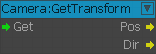
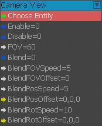
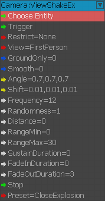

GetTransform
Returns the transform for the player camera.

View
Creates a custom view linked to an entity.

Input Port | Description |
|---|---|
EntityId | Specify the input Entity. Camera location will be based off objects pivot point. |
Enable | Enablecustom view. |
Disable | Disablecustom view. |
FOV | Field of View used by the custom view. |
Blend | Enables Field of View, Position and Rotation blending. |
BlendFOVSpeed | How fast to blend in the FOV offset. |
BlendFOVOffset | FOV offset. |
BlendPosSpeed | How fast to blend in the position offset. |
BlendPosOffset | Position offset. |
BlendRotSpeed | How fast to blend in the rotation offset. |
BlendRotOffset | Rotation offset. |
ViewShakeEx
This node will enable a camera shake on the players view. You can specify the fade in & out durations and also stop the effect via an input.

Input | Description |
|---|---|
EntityId | Specify the input Entity. |
Trigger | Triggerinput to start the effect. |
Restrict | If set it will only work if conditions are met. Choices: None, InVehicle or NoVehicle. |
View | If set it will only work if conditions are met. Choices: First Person or Current. |
GroundOnly | If set, will only trigger if the player is on the ground. |
Smooth | If smooth is true, the camera movement will be curved (that should be used typically for breath). If false, the camera will move linearly, more adapted to a violent shake. |
Angle | Set this to make the camera rotate back & forth within specified angles. |
Shift | Set this to move the cameras view position. |
Frequency | How quickly the camera will move/rotate between the specified ranges. |
Randomness | Add some random values over the top of the specified Shift & angle. |
Distance | Distancerepresents the distance between the camera and the location where the shake occurs.
|
RangeMin | Represents the distance where the camera shake is strongest. |
RangeMax | Represents the distance where the camera shake is null. |
SustainDuration | Once the FadeIn has finished, this is how long the full effect will play for (Total duration = FadeIn + Sustain + FadeOut). |
FadeInDuration | How long to ramp effect uptomaximum. |
FadeOutDuration | How long to fade out the effect. |
Stop | Trigger input to stop the effect. |
Preset | Choose from some custom pre-made effects. Choices: CloseExplosion, DistanceExplosion, NoPreset, SmallTremor or SmallTremor2. |
Deprecated Nodes
- Camera:AutoFocusDoF
- Camera:Camera
- Camera:YPR
- Camera:ViewShake
- OverrideFOV
- ScreenToWorld